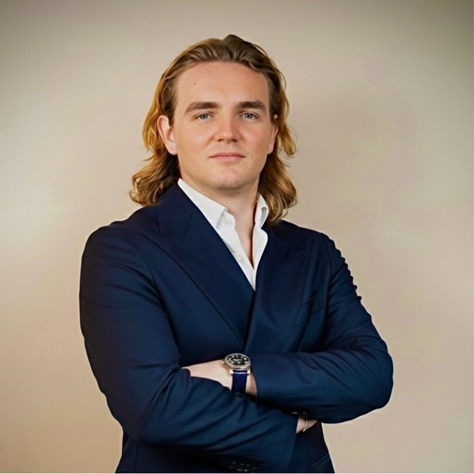

La rédaction
Trois signatures, un protocole, zéro partenariat rémunéré. Voici qui écrit Meilleurs., qui dort dans les chambres que nous notons, et qui répond quand vous nous écrivez.
Meilleurs. est un média en ligne français consacré aux hôtels, spas et destinations d'exception, lancé en 2026 et édité par Triaina, société par actions simplifiée établie à Paris (mentions légales). La ligne est simple : des palmarès indépendants, des chambres réellement testées, des soins réellement reçus, et une méthode publiée, le Protocole LMHS. Aucun établissement ne paie pour figurer dans nos pages, aucun lien n'est affilié.
Qui écrit

Lucas Lecoq
Rédacteur en chef · Président de Triaina
Cofondateur du média, Lucas Lecoq en dirige la rédaction et en assume la direction de la publication. Il signe le palmarès national des 50 meilleurs hôtels & spas de France ainsi que les classements par ville, de Lyon à Bordeaux en passant par Saint-Tropez et les 4 étoiles parisiens. C'est lui qui a fixé la règle de la maison : un bémol par adresse, un tarif daté par prix, et aucune note sans méthode.
8 parutions signées · Sa page auteur → · LinkedIn → · Instagram →
Swann Bertaud
Rédacteur hôtellerie de luxe · Directeur général de Triaina
Cofondateur du média, Swann Bertaud couvre le très haut de gamme : palaces, spas et rituels. Il signe notre enquête sur le Cheval Blanc Paris, le classement des spas de palaces parisiens, les hammams de Paris testés thermomètre en main, ainsi que les guides Provence, Côte d'Azur et les ouvertures de l'automne 2026. Sa spécialité : vérifier ce que les brochures promettent, mètre carré par mètre carré.
10 parutions signées · Sa page auteur → · LinkedIn →

Emmanuel Laveran
Rédacteur hôtels et gastronomie · Associé de Triaina
Arrivé en juillet 2026, Emmanuel Laveran est cofondateur du magazine de voyage Yonder, où il a signé 226 articles, et fondateur de l'agence W Garden. Il écrit aussi pour Les Hardis et pour 180°C, la revue culture food dont il est associé. Chez Meilleurs., il prend le terrain le moins bien couvert par la concurrence : ce qui se passe à table, et ce que vaut la chambre au-dessus. Il ouvre son compteur avec une sélection de cinq croisières sur le Nil.
1 parution signée · Sa page auteur → · LinkedIn →
Comment nous travaillons
Chaque contenu du site relève d'un des trois instruments du Protocole LMHS : la note sur 20 après visite anonyme, la grille Destination sur 10 pour les classements de villes et de régions, la fiche sur 10 pour les avis détaillés. Les nuits sont payées par le média, les visites réservées sous un nom neutre, et chaque erreur signalée est corrigée publiquement, avec sa date de mise à jour.
Nous contacter
Une adresse à proposer, une erreur à signaler, une demande presse : le formulaire de contact arrive directement sur nos bureaux, réponse sous 48 h. Les ayants droit d'une photographie peuvent demander une modification ou un retrait par le même canal.